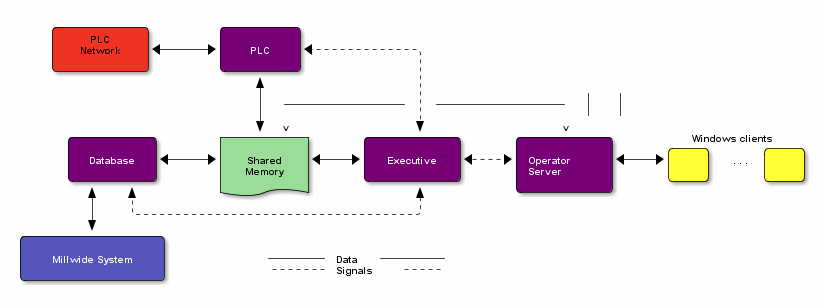
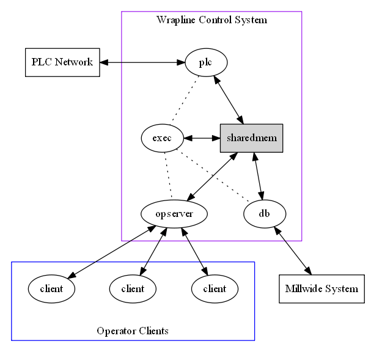

<div id="table-of-contents">
<h2>Table of Contents</h2>
<div id="text-table-of-contents">
<ul>
<li><a href="#sec-1">常访问网站</a>
<ul>
<li><a href="#sec-1-1">经济类</a></li>
<li><a href="#sec-1-2">技术类</a></li>
<li><a href="#sec-1-3">见识类&#xa0;&#xa0;&#xa0;<span class="tag"><span class="graphviz">graphviz</span></span></a></li>
</ul>
</li>
</ul>
</div>
</div>
<p>
It was early January when six of us travelled up to &#x2026;.
</p>
<div id="outline-container-sec-1" class="outline-2">
<h2 id="sec-1">常访问网站</h2>
<div class="outline-text-2" id="text-1">
</div><div id="outline-container-sec-1-1" class="outline-3">
<h3 id="sec-1-1">经济类</h3>
<div class="outline-text-3" id="text-1-1">
</div><div id="outline-container-sec-1-1-1" class="outline-4">
<h4 id="sec-1-1-1"><a href="http://www.ftchinese.com/">FT中文网</a></h4>
</div>
</div>
<div id="outline-container-sec-1-2" class="outline-3">
<h3 id="sec-1-2">技术类</h3>
<div class="outline-text-3" id="text-1-2">
</div><div id="outline-container-sec-1-2-1" class="outline-4">
<h4 id="sec-1-2-1">emacs</h4>
<div class="outline-text-4" id="text-1-2-1">
</div><div id="outline-container-sec-1-2-1-1" class="outline-5">
<h5 id="sec-1-2-1-1"><a href="http://doc.norang.ca/org-mode.html">Organize Your Life In Plain Text!</a></h5>
</div>
</div>
</div>
<div id="outline-container-sec-1-3" class="outline-3">
<h3 id="sec-1-3">见识类&#xa0;&#xa0;&#xa0;<span class="tag"><span class="graphviz">graphviz</span></span></h3>
<div class="outline-text-3" id="text-1-3">

<div class="figure">
<p>
</p>
</div>


<div class="figure">
<p>
</p>
</div>
</div>
</div>
</div>
